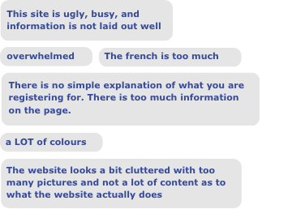
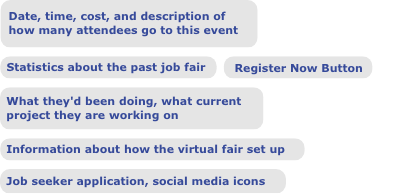
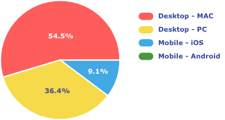
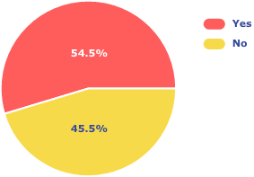
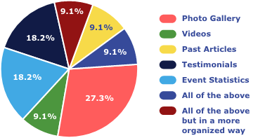
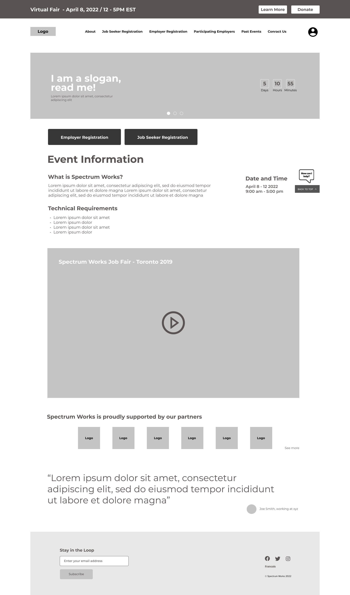
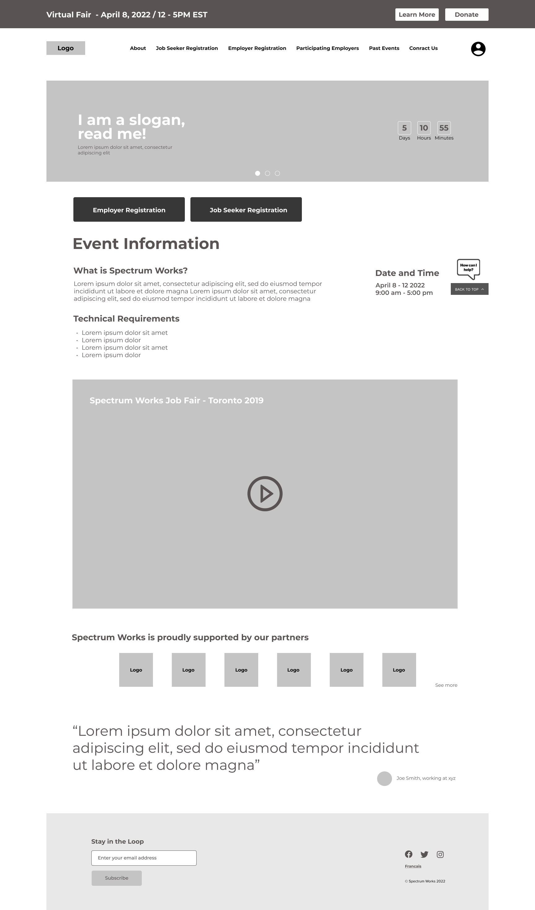

01 Research
Proto Persona
I created a proto-persona for Janice Brown, a 27 year old HR recruiter for Canadian Tire. She is looking to improve inclusivity and diversity in the labor force. She is interested in an opportunity to connect with autistic job seekers and has a goal to hire full and part time workers in the immediate future.

Issues with the old website
I began with analyzing SpectrumWorks’ current website, which was created on one of Wordpress template options.
After writing down all my observations, I translated the main issues into insights that would help inform the final design.
Click here to check the whole website
- There is no structure or hierarchy of what is the most important to the least important element of this entire website.
- The CTA button sizes are inconsistent, as well as the typography. It’s not clear what action the user should take.
- The menu navigation should be located above all the content of this page.
- The site is a single homepage with all the content for this event.
- This English and French websites should be separated.
- There is no footer.
Online Survey & One-on-one Interview
For gathering how potential users impression of the current website, I did an online survey and conducted 3 online interviews.
What was your first impression?
Imagine you are an HR Manager tasked with registering for a virtual job fair. What would you need to see on this website?
What device did you use tolook at spectrumworks.ca?
Were you able to find the social media icons?
For past events information what would you like to see?
From the 11 online responses and interviews, the first impression of the website was that people liked that a site like this exists and felt It’s a good cause. However, the one page website was ugly, busy, overwhelming, cluttered, had too many pictures on one page and not a lot of content. The information was not laid out well.

 
